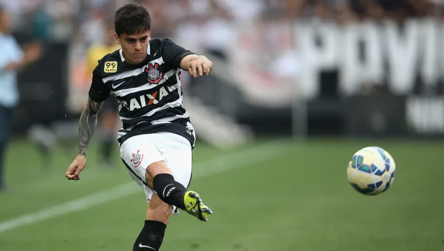
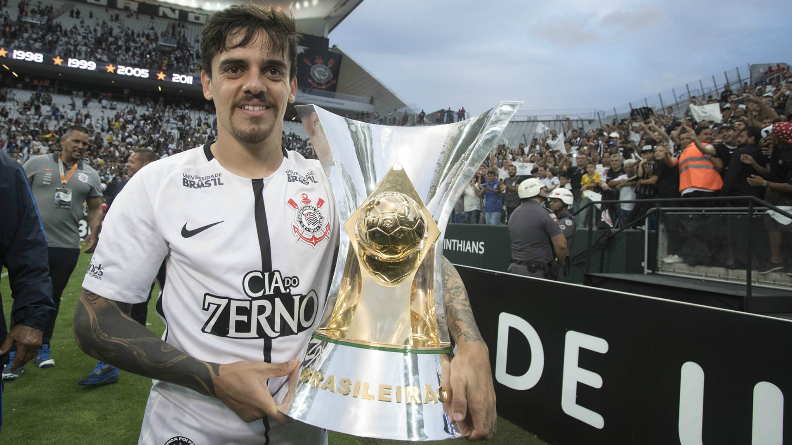

Corinthians relembra anúncio de Fagner, a 9 anos atrás.
Nessa notícia você verá todos os feitos do craque com a camisa alvinegra!
9 anos atrás, o Corinthians firmava um acordo com o Wolfzburg, por empréstimo, com um lateral que vinha sendo destaque nos campeonatos brasileiros, fazendo parte da Seleção do Brasileirão de 2011. O contrato inicialmente era um empréstimo de um ano com opção de compra no final do período. A temporada de 2014 foi ótima para o jogador, que fez parte de uma das defesas menos vazadas do campeonato Brasileiro. Com isso, o clube decidiu exercer a opção de compra no início de 2015, adquirindo 50% do jogador até o final de 2019. No meio dessa temporada, o jogador completou 100 jogos com a camisa do Corinthians, e conquistou seu primeiro título: o Campeonato Brasileiro
Após um período de "seca", Fagner voltou a conquistar titulos no ano de 2017, com mais um titulo Brasileiro, em uma campanha quase perfeita do Corinthians, e o Paulistão. Conquistou o Paulistão nos próximos dois anos consecutivamente, fazendo parte de algo histórico: A conquista de 3 campeonatos consecutivos, e o trigésimo título do Paulistão. Atualmente o craque se afirma como um das melhores da posição atuando no Brasil, e entra no posto de um dos maiores laterais da história do clube Alvinegro, atuando em mais de 480 partidas.